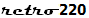
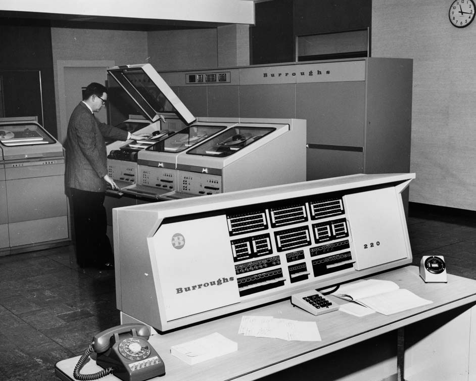

Burroughs 220 Emulator
Open-Source Project
Burroughs 205 & 220 Blog

Start the Emulator
Configure System
(Caution: Closing this window, minimizing it, or placing the page on a non-active tab may cause the emulator to run very slowly)